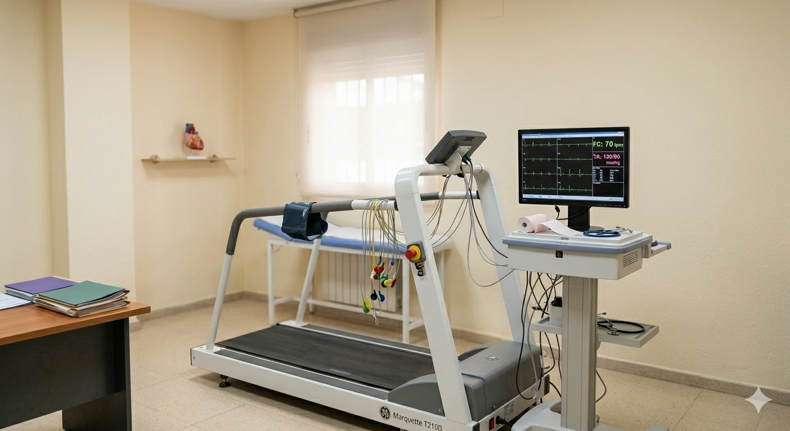

Pruebas diagnósticas · Clínica Elche Salud
El corazón bajo exigencia física · Ergometría

Un corazón puede comportarse con normalidad en reposo y mostrar alteraciones solo cuando se le exige. La prueba de esfuerzo registra el comportamiento cardíaco en tiempo real mientras aumenta progresivamente la carga física — en cinta de correr o bicicleta estática. Durante toda la prueba se monitoriza el ECG de forma continua y la tensión arterial con un manguito especializado.
Es la única forma de detectar problemas que solo aparecen con el ejercicio: isquemia que pasa desapercibida en reposo, arritmias de esfuerzo o una respuesta de la tensión arterial inadecuada.
Está indicada ante dolor torácico o disnea con el esfuerzo, síncope o mareo durante el ejercicio, estudio de arritmias que empeoran con la actividad, valoración previa a inicio de ejercicio intenso en personas con factores de riesgo, y seguimiento tras un evento coronario o intervención cardíaca. También se utiliza como parte de la valoración en reconocimientos cardiológicos deportivos.
Ropa cómoda y zapatillas deportivas adecuadas para correr.
Comida ligera 2–3 horas antes. No vengas en ayunas ni recién comido.
Evita café, tabaco y bebidas energéticas el día de la prueba.
Confirma previamente si debes tomar tu medicación habitual ese día.
Qué ocurre durante la ergometría, qué detecta el cardiólogo y por qué es la única prueba que evalúa el corazón en movimiento.
Prueba supervisada en Elche. Informe detallado al finalizar. Reserva en Doctoralia.
Registro rápido de la actividad eléctrica del corazón en reposo.
Ver más → PruebaEstudio de la estructura y función del corazón mediante ultrasonidos.
Ver más → PruebaMonitorización cardíaca continua de 24 horas para detectar arritmias.
Ver más →